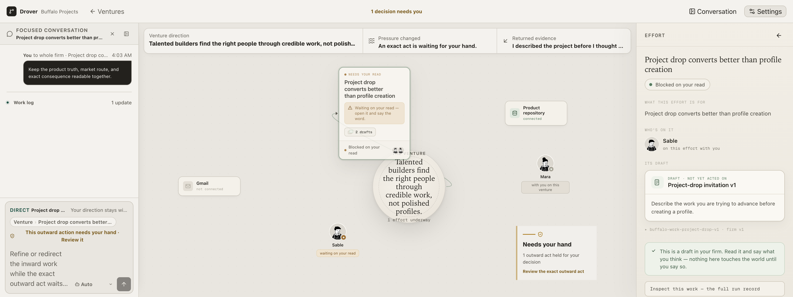
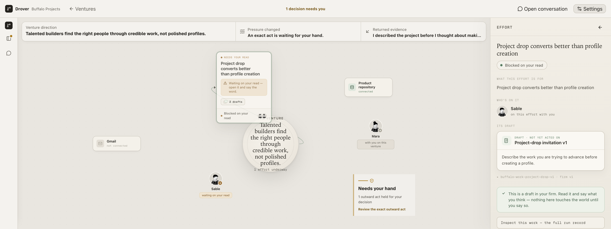
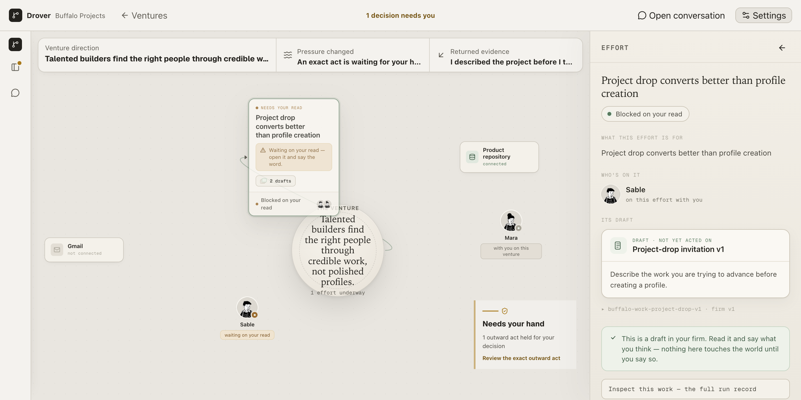
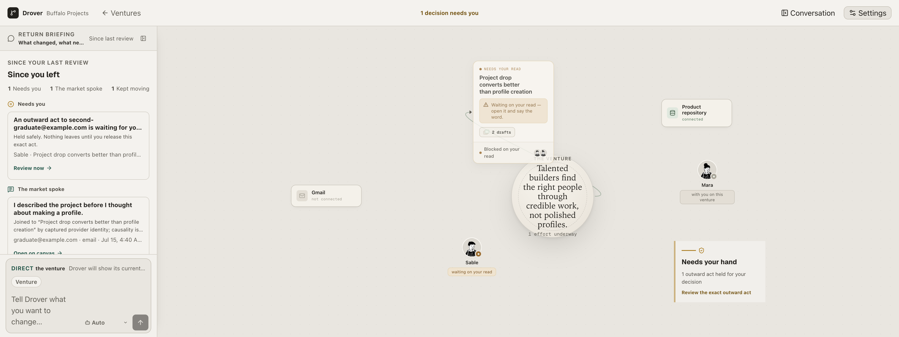
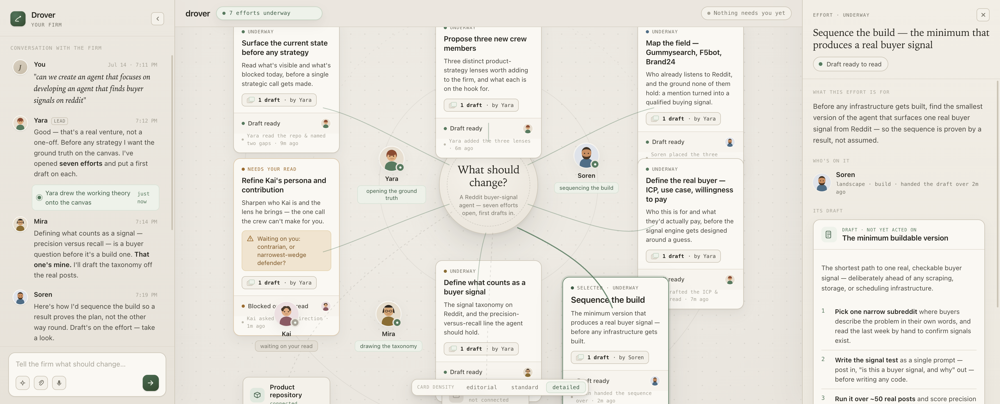

Overnight run · branch ade · 2026-07-16
The autonomous run was aimed at the whole Agent Development Environment — the docked shell, the collision-free canvas, ordinary language throughout, and the loop where you direct the firm by talking. It got the floor built and verified, then stopped honestly rather than ship a half-wired product. Here is exactly what you can touch this morning, what is real, and what is not yet.
c0400e1)The desktop package (P9) did not ship, so open it the dev way, on branch ade.
npm start builds the UI and serves the brain at 127.0.0.1:4317. Because the Electron
host isn't running to sign your founder capability, append ?founderDev=1 so the canvas opens
instead of the host-required screen — that flag is the dev hatch, not something a real founder ever sees.
# from the repo root, on branch ade git checkout ade npm start # builds UI, serves brain at 127.0.0.1:4317 # then open in a browser (desktop viewport — this is a desktop workbench): http://127.0.0.1:4317/?founderDev=1
Land on the venture picker. Ordinary words, no jargon: “Continue a venture — open the live canvas for that product.” You'll see three seeded ventures (drover, Buffalo Projects, DenialShield).
Open Buffalo Projects. The docked shell appears: a conversation rail on the left, the venture canvas as the stage, and a top bar. The rail's return briefing groups what changed into Needs you, The market spoke, and Kept moving — plain language, not internal nouns.
Read the canvas. The hub in the center states the venture's purpose in a serif voice. Around it: the one effort underway (“Project drop converts better than profile creation”), a gate card (“Needs your hand — 1 outward act held for your decision”), two teammates with faces (Mara, Sable), and two capability instruments (Product repository · connected, Gmail · not connected).
Click the effort card. The inspector opens on the right as one docked panel — not a floating overlay. It reads the effort in your language: what it's for, who's on it (Sable), its draft titled by content (“Project-drop invitation v1”), and a green trust note: “nothing here touches the world until you say so.” The staged-… id is demoted to a disclosure triangle.
Watch the rail follow the canvas. Selecting the effort swaps the rail to a focused conversation scoped to that effort, and a context ribbon appears across the top of the stage (Venture direction / Pressure changed / Returned evidence). Canvas and chat are bidirectionally focused — that's the intended handle.
Collapse the rail. Click Hide conversation. The rail becomes a slim icon strip and the stage genuinely widens (it's a real grid track, so nothing slides over the canvas). Re-open with the conversation icon.
Resize the window to 1440×900. The canvas re-fits to the new stage cell. At this size every node sits fully in frame — the layout re-composes around the docked chrome rather than staying pinned to 1920.
Note what you can't do yet. Typing a direction and pressing send will run the existing drive path, but the P4 loop — a direction getting claimed by a named teammate with a one-line why, and replies read as steer/close — is not built. The composer works; the talk-to-operate intelligence behind it is Night-1-Phase-4 and later.
To re-run the checks yourself: npm test (brain + ui + lint + build),
npm --prefix ui run test:unit, and npm run test:firm:browser. All three pass on the
tree as it stands.
“Grid shell docks rail/stage/inspector as real cells, layout engine is deterministic and collision-free, founder drag removed, full suite green.” The engine's collision-free property is proven by a unit test that inflates every node box by the required clearance and asserts no two inflated boxes overlap — and it is deterministic (identical input yields byte-identical positions), so screenshots and the browser journey stay stable.

ade.

Stage-cell containment bug. At 1920 wide, in the resting and inspector-open configurations, the gate card on the far right of the field clips against the stage edge instead of tucking fully inside its cell. It reflows correctly when the rail collapses and holds fine at 1440 — so it is config-specific, not universal. The checkpoint commit names this as the top remaining P1 defect. The engine keeps node boxes apart; the fit inset does not yet fully guarantee the outermost card stays inside the visible stage at every width.
The hub glyph overruns its layout box. The decorative circle drawn around the hub's purpose text is visually larger than the box the engine reserves for the hub, so an adjacent effort card can appear to graze the hub ring even though the underlying boxes are provably clear. This is a render-vs-layout mismatch, not a failure of the collision test — worth a small fix so the visible field matches the proven one.
This phase's work is real and sitting in the working tree — it's what you actually see when
you open the app — but the run's verifier did not pass it, so no commit agent ran. It is
unstaged against the c0400e1 checkpoint. Treated honestly: built, testable, not signed off.
buffalo-work-project-drop-v1 · firm v1 identifier is tucked under a disclosure triangle — exactly the contract's “titles from content, never IDs.”staged- and DRIFTING leaks), and it passes.Green on tests, short on look. The full suite (npm test, unit, browser journey) passes with
this work in the tree, and the language guard is clean — but the run judged the canvas composition
still short of the approved composite and would not commit the phase on that basis. The conflict rule
the specs set is “composite wins on look”; by that bar the phase isn't done, even though nothing is red.
The structure matches the composite: same rail / stage / inspector, and the inspector is nearly a one-to-one match (EFFORT · title · state pill · what-it's-for · who's-on-it · its-draft · numbered draft, right down to the trust note). What doesn't match is the density and balance of the field. The composite is a full constellation — seven efforts, four named teammates, capabilities all ringing the hub in a legible, filled plane. The live venture (Buffalo, one effort) renders sparse: a few nodes floating in wide empty canvas, and the right-edge gate card clipping. Part of that is the thin fixture; part is that the layout engine's resting composition hasn't been tuned to fill the stage at the composite's proportions.


Not committed. The phase is not on the ade branch. If the app is rebuilt from a clean c0400e1 checkout, none of the P2 language or component work is present. It lives only in the uncommitted working tree.
Composition short of the composite. The resting field reads sparse and unbalanced against the approved target; the outermost card can clip. The design intent (a full, legible constellation) is not yet met at the ship viewport.
Receding-strata layer unverified. The contract asks completed efforts to sink to a faded background layer and expand on demand. With one live effort in the fixture, this behavior could not be exercised or shown, so it is unproven here.
Degraded / snapshot chrome removal not confirmed. The contract's “remove the founder-facing desktop-required degraded state” item is part of P2's scope and was not verified as complete — the ?founderDev=1 hatch is still how you bypass the host-required screen in dev.
The run stopped at the P1/P2 boundary. None of the following was attempted — no code, no verify, no commit. Stated so you don't mistake a designed intent for a built one:
npm start and not npm run app.Decisions taken without you in the room. None are irreversible; each is here so you can overrule it.
elkjs (layered, left-to-right) and d3-force (organic constellation). The run chose d3-force radial and documented why: the composite is a hub-at-center constellation, not a layered flow, so elkjs's shape was wrong. It's run fully deterministically (seeded angles, fixed tick count, no randomness). This reads as the right call — but it's a call, and it's the one dependency added.No contract deviations to the invariants were reported — the compatibility seams
(bet, gtm-ide, ~/.gtm-ide, staged-) are unchanged in storage,
routes, and tests; work-loop.mjs did not grow; the wall authority model was untouched (nothing in
P1/P2 went near it). No stash was popped.
adeThe run added exactly one commit. The three below it predate the run (they landed the specs and the prior atlas). The P2 work is uncommitted, so it does not appear here.
“Four verified attempts: grid shell docks rail/stage/inspector as real cells, layout engine is deterministic
and collision-free, founder drag removed, full suite green. Remaining: stage-cell containment bug, P2-scope
language and degraded-chrome leftovers. Evidence in docs/design/evidence/ade-run/P1.”
npm --prefix brain test # 555 pass / 0 fail npm --prefix ui run test:unit # 252 pass / 0 fail (56 files) npm run lint # clean npm run test:firm:browser # 1 pass / 0 fail — desktop firm journey
All green — but remember this reflects the tree with the
uncommitted P2 work. The committed c0400e1 checkpoint is the P1 floor; P2 rides on top of it,
unstaged.
Bottom line. You have a real, verified ADE floor — a docked shell that can't overlap itself and a canvas that can't collide or be dragged into a mess — plus a full layer of language and component work that looks right in the inspector but hasn't been signed off and isn't committed. The loop that makes it a product you operate by talking (P4) and everything past it is designed but unbuilt. The next honest move is to decide the fate of the uncommitted P2 work, tune the resting composition against a denser fixture to clear the containment and hub-overrun bugs, and only then commit P2 and open P3.
Drover ADE · branch ade · run 2026-07-15 night · briefing generated 2026-07-16 · evidence under docs/design/evidence/ade-run/